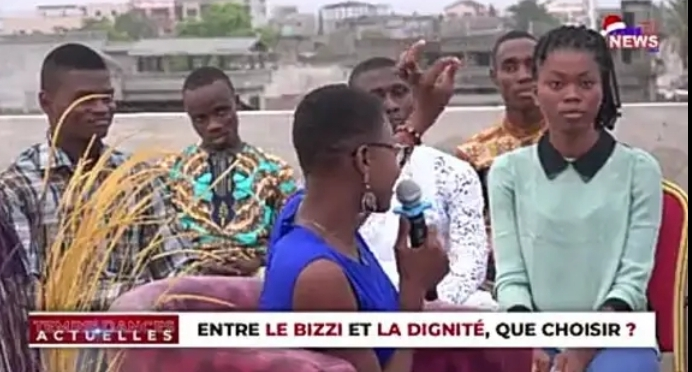
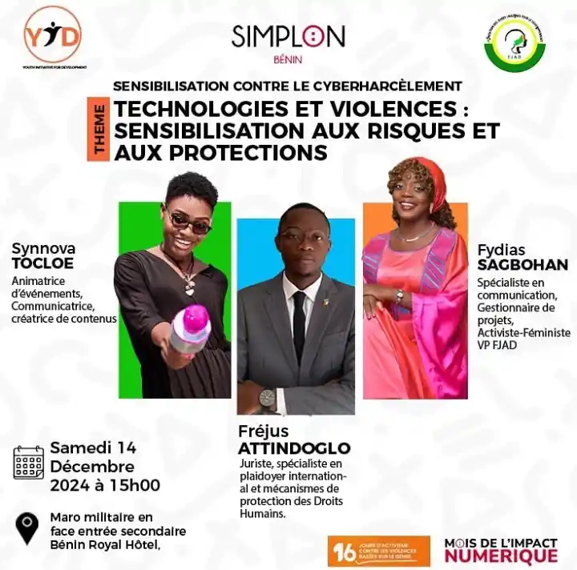

Mes univers
Quatre mondes, quatre forcesQuatre univers
Je suis Synnova Tocloe, animatrice Bénin et communicatrice Grand-Popo. Chacun de mes univers est un monde distinct, visible, vivant — avec sa propre atmosphère, son propre rythme et sa propre énergie.
Animation &
Événements
« Une salle qui s'éveille, une foule qui vibre — c'est là que je suis le plus vivante. »
Sur scène ou au micro, je transforme chaque événement en expérience mémorable. Lancements de produits, galas, conférences, cérémonies institutionnelles ou soirées privées : je sais exactement comment tenir une salle, créer l'élan et emmener le public là où on veut qu'il aille.
Mon secret ? Une présence naturelle qui n'a rien d'artificiel, une diction précise, et une capacité rare à improviser avec grâce quand l'imprévu s'invite. Je ne me contente pas d'animer — j'incarne l'événement.

Communication
Digitale
« Publier, c'est facile. Créer quelque chose qui reste dans les esprits — c'est tout autre chose. »
Dans un monde saturé de contenus, Belvine choisit la qualité plutôt que le bruit. Elle conçoit des stratégies de communication digitale qui parlent vrai, qui touchent juste et qui construisent une identité forte sur les réseaux.
De la conception éditoriale à la production visuelle, en passant par la gestion de communauté, je maîtrise toute la chaîne. Chaque publication est pensée comme un acte de marque — cohérent, authentique, et pensé pour durer bien au-delà du scroll.

Cinéma
& Régie
« Devant la caméra, je vis un personnage. Derrière, je veille à ce que la magie opère pour tous. »
Le cinéma, pour moi, est une double vocation. Actrice, je m'empare des rôles avec une profondeur émotionnelle qui saisit — ces regards, ces silences qui font qu'une scène ne s'oublie pas. Régisseuse plateau, je suis celle qui orchestre l'invisible : la coordination, le timing, l'énergie collective qui transforme un tournage en œuvre.
Engagée dans l'écosystème culturel béninois, je contribue activement au Festival des Arts du Bénin, convaincue que le cinéma africain a des histoires extraordinaires à raconter au monde.

· Galerie photos

.jpg)
Prêt à construire
quelque chose ensemble ?
Événement, collaboration, production, projet social — parlons-en.